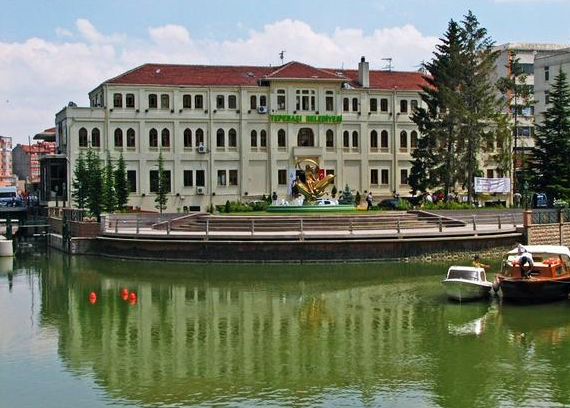
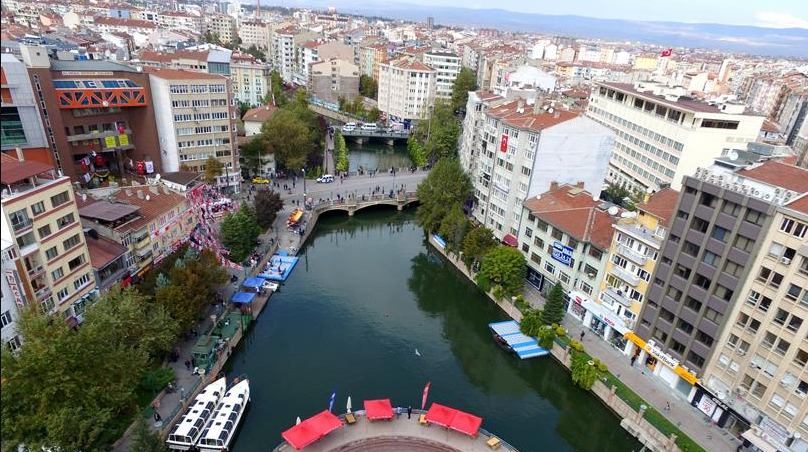

TEPEBAŞI
Eskişehir Büyükşehir Belediyesi altında hizmet veren Tepebaşı Belediyesi
9 Eylül 1993 Tarih 21693 Sayılı Resmi Gazetede yayınlanan 504 sayılı‘’
Yedi İlde Büyükşehir Kurulması Hakkındaki Kanun Hükmünde Kararname ‘’ uyarınca ilk kademe Belediyesi olarak kurulmuştur.
06.03.2008 Tarih ve 5747 Sayılı ‘’Büyükşehir Belediyesi Sınırları İçerisinde İlçe Kurulması
ve Bazı Kanunlarda Değişiklik Yapılması Hakkında Kanun’’ gereği ilçe statüsüne dönüşmüş ve Çukurhisar,
Muttalip Belde Belediyelerinin tüzel kişilikleri kaldırılarak ilçeye bağlanmıştır.
Tepebaşı, Eskişehir’i doğu-batı istikametinde ikiye bölen Porsuk Çayı’nın kuzeyinde kalmaktadır.
Buraya 19. yüzyılda inşa edilmiş Surp Yerrortutyun Ermeni Kilisesi bugün Zübeyde Hanım Kültür Merkezi olarak kullanılıyor.
Kentteki 3 üniversiteden birisi olan Anadolu Üniversitesi
ve Eskişehir Teknik Üniversitesi Tepebaşı sınırları içerisinde kalmaktadır.
Ayrıca 1894 yılında kurulan ve Türkiye Lokomotif ve Motor Sanayi A.Ş. (TÜLOMSAŞ),
Türkiye Cumhuriyetinin ilk fabrikalarından Eskişehir Şeker Fabrikası, hava platformlarının tasarımı,
geliştirilmesi, imalatı, entegrasyonu ve modernizasyonu alanlarında teknoloji üreten TUSAŞ Havacılık ve Uzay Sanayi A.Ş. (TAI)
ile geleneksel sanayi sektörlerinden olan çeşitli tuğla-kiremit fabrikaları ve un fabrikaları ve ilin
5 büyük Alış Veriş Merkezleri de Tepebaşı sınırları içerisinde bulunmaktadır.


Sarıcakaya İlçesi Hakkında Bilgi Almak için Tıklayınız